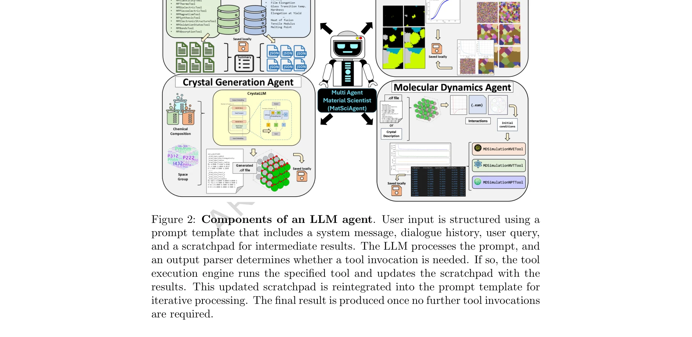

Essence

Figure 1: MatSciAgent architecture. This illustration showcases how each
MatSciAgent는 LLM 기반의 다중 에이전트 프레임워크로, 재료 데이터 검색, 연속체 시뮬레이션, 결정 구조 생성, 분자 동역학 시뮬레이션 등 다양한 전산 재료과학 작업을 자연어 쿼리로 자동화한다.
저자: Akshat Chaudhari, Janghoon Ock, Amir Barati Farimani | 날짜: 2026-03-26 | DOI: 10.1038/s43246-025-00994-x
Figure 1: MatSciAgent architecture. This illustration showcases how each
MatSciAgent는 LLM 기반의 다중 에이전트 프레임워크로, 재료 데이터 검색, 연속체 시뮬레이션, 결정 구조 생성, 분자 동역학 시뮬레이션 등 다양한 전산 재료과학 작업을 자연어 쿼리로 자동화한다.

Figure 2: Components of an LLM agent. User input is structured using a
총평: MatSciAgent는 LLM 기반 다중 에이전트 프레임워크로 재료과학 워크플로우를 효과적으로 자동화하며, 모듈식 설계와 높은 안정성을 입증하여 계산 재료과학 분야에 실질적 기여를 한다. 다만 더 광범위한 시뮬레이션 지원과 다양한 LLM 벤치마킹으로 보완하면 영향력이 배가될 것으로 예상된다.